Features of the World's Writing Systems
In order to understand the structure and workings of Macintosh text handling, it is useful to first consider the range of text features that need to be represented on the computer. This section presents the principal text-related features, taken from writing systems around the world, that the Macintosh addresses.A writing system is a set of characters and the basic rules for their use in creating a visual depiction of language. There are more than 30 active writing systems in the world today, used to represent the official written languages of one or more regions and countries. Examples of writing systems are Roman, Chinese, Japanese, Hebrew, and Arabic. Color Plate 1 shows the world distribution of some of the principal writing systems.
Each writing system has distinct attributes. Simple systems such as Roman, Greek, and Cyrillic usually have fewer than 200 characters; Japanese, a complex writing system, theoretically contains more than 40,000. Printed Roman characters are relatively independent of each other; Arabic characters change shape depending on the characters that surround them. Some writing systems use spaces to separate words; others do not separate words at all. Some writing systems, such as Japanese, actually include multiple subsystems, each with its own set of characters and rules for how they are combined.
Figure 1-11 shows the names of various languages and regions, written in the appropriate writing system for each language.
Figure 1-11 Writing-system examples
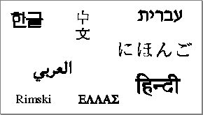
The variety of writing-system attributes presents difficult, though not insurmountable, challenges to their representation on the Macintosh computer. This section discusses the principal attributes that the Macintosh script management system addresses.Character Representation
Writing systems differ in the kind and number of characters required to create words as the basic components of language. Some writing systems, such as Roman and Cyrillic, are basically alphabetic: the characters in the writing system symbolize, more or less, the discrete phonemic elements in the languages represented by that writing system. Other writing systems, such as Japanese Kana, are syllabic: the characters stand for syllables in the language.Some writing systems--namely, Japanese Kanji, Chinese Hanzi, and Korean Hanja--include ideographic characters. These characters do not represent pronunciation alone, but are also related to the component meanings of words. A typical character set for ideographic writing systems is quite large, ranging from 7,000 to 30,000 characters.
Figure 1-12 shows examples of alphabetic, syllabic, and ideographic representations of characters.
Figure 1-12 Words with alphabetic, syllabic, and ideographic characters
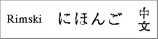
Several writing systems, including Hebrew, Thai, and Korean, contain character clusters. A character cluster is a collection of alphabetic characters.On the computer, character clusters pose difficulties in the treatment of word demarcation, the movement of the caret, deletion, and highlighting.
- In some systems, character clusters consist of a principal character plus attachments in memory. For example, in Hebrew, a cluster may be composed of a consonant, a vowel, a dot to soften the pronunciation of the consonant, and a cantillation mark.
- In other systems, character clusters occur as alphabetic blocks made of 2 to 5 component parts. For example, in Korean, consonant and vowel components called Jamo are combined into blocks called Hangul. See Figure 1-39 on page 1-60 for an example. In Thai (as shown in Figure 1-13), consonants are combined with vowel marks and tone marks to make clusters.
Figure 1-13 Thai character cluster
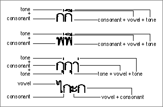
Line Direction and Alignment
Writing systems also vary in the direction in which characters are written:Figure 1-14 shows several text directions. These three writing directions--left-right top-bottom, right-left top-bottom, and top-bottom right-left--are the most common of the eight possible combinations of line direction and fill direction.
- In Roman writing systems, characters are written from left to right, with horizontal lines of text filling the page from top to bottom.
- Arabic and Hebrew writing systems have most characters written from right to left, with horizontal lines of text filling the page from top to bottom.
- In Japanese and Chinese, characters are traditionally written from top to bottom, with vertical lines (columns) of characters filling the page from right to left. There are no spaces between words. In modern China and Japan, technical documents and academic journals are written in standard left-to-right horizontal lines, while text for newspapers and magazines is written mostly in vertical columns.
- In Mongolian, the characters are written in a vertical column, with spaces between words, and the lines fill the page from left to right.
Figure 1-14 Line directions in text
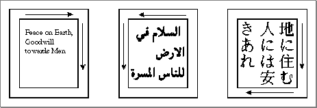
More than one line direction can exist within a single writing system. For example, numbers in Arabic and Hebrew are commonly written left to right, even though nonnumeric text is written from right to left. Furthermore, commonly interspersed foreign words from the Roman writing system are also written from left to right. Thus the Hebrew and Arabic writing systems are actually bidirectional, even though their primary line direction is right-to-left.The Macintosh script management system supports the ability to write text from left to right and from right to left, and to mix text with different directions within lines and blocks of text. Your application can add the ability to handle vertical text, if desired.
Alignment is the horizontal placement of lines of text with respect to the left and right edges of the text area. Alignment can be left-aligned (also called flush left or ragged right), right-aligned (also called flush right or ragged left), centered, or justified (that is, aligned to both left and right edges of the text area). See Figure 1-15.
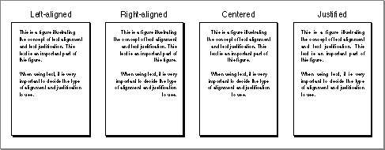
Alignment is related to line direction in that text with a left-to-right line direction is usually left-aligned, whereas text with a right-to-left line direction is usually right-aligned.
- Note
- Although the term justified is sometimes used as a synonym for aligned, as in "left-justified" or "right-justified" text, this book considers justified to be equivalent only to fully justified, and uses aligned exclusively when referring to text that is left-aligned, right-aligned, or centered.

Justification is achieved by spreading or compressing printed text to fit a given line width. It can be performed in Roman text by altering the widths of interword spaces alone, or by altering both interword and intercharacter spaces. Writing systems that don't use interword spaces typically justify text by modifying the intercharacter spacing alone. See Figure 1-16.
Figure 1-16 Justification through interword (Hebrew) and intercharacter (Japanese) spacing
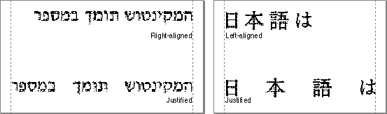
Arabic text, however, is justified by extending characters themselves. Printed or displayed text is justified by inserting extension bar characters (kashida) between joined characters, and by widening blank characters to fill any remaining gaps. See Figure 1-17.Figure 1-17 Justification with Arabic extension bar characters
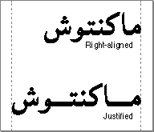
The Macintosh script management system can take all of these justification methods into account when drawing, measuring, or selecting text.Contextual Forms and Character Reordering
In writing systems, contextuality or context dependence means that character forms may be modified by the values of preceding and following characters in the input stream. In Arabic, the displayed form of many characters changes depending on their position in a word or on what other characters are nearby.The displayed form that represents a character in printed English does not usually depend on bordering characters. This is not the case for many writing systems. Even in cursive English, for example, when one letter is joined to the preceding letter, the connecting line varies according to which letters are being joined. Characters may also have considerably different shapes depending on where they occur within a word, for example, at the beginning (initial form) or elsewhere in the word (noninitial form). Figure 1-18 illustrates two of these variations in cursive English, which are called contextual forms.
Figure 1-18 Contextual forms in cursive English
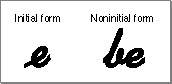
The ability to represent contextual forms is required for the proper display of Arabic text. Figure 1-19 shows standalone and contextual forms in Arabic.Figure 1-19 Standalone and contextual forms in Arabic
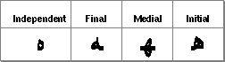
Furthermore, certain character forms may be combined into a new form when they occur together. Figure 1-20 provides an example of how characters combine to form ligatures or conjunct characters in Roman text.Figure 1-20 A ligature in Roman text
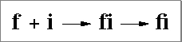
The composition rules for Arabic text, for example, are very complex. The use of ligatures can be highly developed, and some ligatures are required for proper display. Each character can have up to four contextual forms, and the precise form depends upon a varying number of characters that precede and follow it. Figure 1-21 shows an example of a simple ligature in Arabic text.Figure 1-21 A ligature in Arabic text
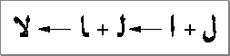
Dozens of Arabic characters form ligatures. As Figure 1-22 illustrates, in some cases, more than two characters can join together into a completely different form, although usually there are only two characters per ligature.Figure 1-22 A complex ligature in Arabic text
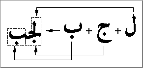
Character reordering is another form of contextuality. Principles of text ordering differ according to the type of writing system under consideration. In most writing systems (including Roman, Greek, Cyrillic, Arabic, and Hebrew), phonetic and writing order are synonymous except for vowel signs and other marks. With certain South Asian writing systems, however, there may be significant differences between phonetic and writing order.Figure 1-23 shows an example of the reordering of vowels for the word hindi in the Devanagari writing system. The left side of the figure shows, in order, the characters that make up the word; the right side shows how the word is actually written. Where there is no explicit vowel sign, consonants take a default vowel sound "a". To cancel the default vowel, you add a vowel marker (virama). Some vowel markers are written to the right of the consonant they modify; others are written to the left, above, or below. In this example, the consonant "h" is followed by a vowel sign, which appears on the left when displayed. The consonant "n" is followed by a virama; together they make a small contextual form when displayed. The consonant "d" is followed by a vowel sign, which appears in normal order (on the right).
Figure 1-23 Character reordering in the Devanagari writing system
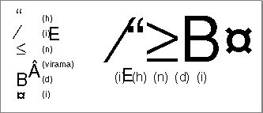
Diacritical Marks
Many writing systems use diacritical marks, signs that modify the implicit sound or value of the characters with which they are associated. Some diacritical marks are often referred to as accents in Roman writing systems: the acute accent in "é", for instance. Others, such as certain Vietnamese diacritical marks, may indicate pitch, while certain Arabic diacritical marks, such as shadda (shown in Figure 1-24), specify extra emphasis on a consonant sound.Figure 1-24 Arabic text with diacritical mark to specify extra emphasis on a consonant
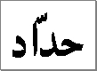
Hebrew text can contain optional vowel and cantillation marks. Vowel marks are shown in Figure 1-25.Figure 1-25 Vowel marks in Hebrew text
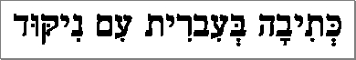
Uppercase and Lowercase Characters
English speakers are familiar with uppercase and lowercase characters in the Roman writing system; however, the majority of the world's writing systems do not have separate uppercase and lowercase forms. The implications for computer applications are primarily in the areas of searching, sorting, and proofreading (for example, spell-checking).
- Note
- In the Roman writing system, different languages (and even different regions or countries that use the same language) can have different conventions for the treatment of accents and diacritical marks on uppercase characters. These differences are accounted for in individual localized versions of the Roman script system.
Word Demarcation
Words in Roman writing systems are generally delimited by spaces and punctuation marks as shown in Figure 1-26. Note also that word demarcation for word selection may follow different rules from word demarcation for line breaking.Figure 1-26 Word demarcation in the Roman writing system
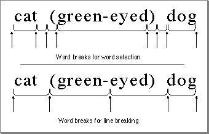
Bidirectional writing systems provide extra challenges to word selection and line breaks. Figure 1-27 shows a single English phrase ("Writing systems including bidirectional") embedded within Hebrew text. The first line breaks within the English text. Note that the line break itself occurs, not at the right or left edge of the first line, but in its interior; and the continuation of the English phrase occurs in the interior of the following line.Figure 1-27 Line breaking in a bidirectional writing system
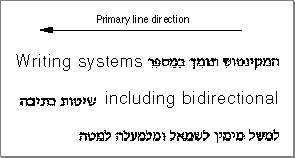
In contrast, many Asian writing systems (such as Japanese and Thai) typically have no word delimiters, so the Macintosh script management system provides a more sophisticated method of finding word boundaries. Figure 1-28 shows word demarcation in Japanese.Figure 1-28 Word demarcation in Japanese
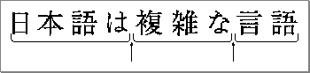
The definition of a word can be an extremely complex issue. Word boundaries are not always well-defined, and native writers of a language may not agree on where particular word boundaries occur.Styles
Style for a writing system means the systematic alteration of a set of glyphs of a given typeface, to uniformly change their appearance while preserving the overall sense of the typeface. Boldfacing, italicizing, underlining, lining-through, and outlining are possible styles that can be applied to text. Not all styles are appropriate or conventional for all writing systems; for example, underlining may not be meaningful for text that is written in vertical columns, and italicizing may not be appropriate for text that should not be slanted.Figure 1-29 provides some examples of the application of styles to several writing systems.
Figure 1-29 Selected valid styles in various writing systems
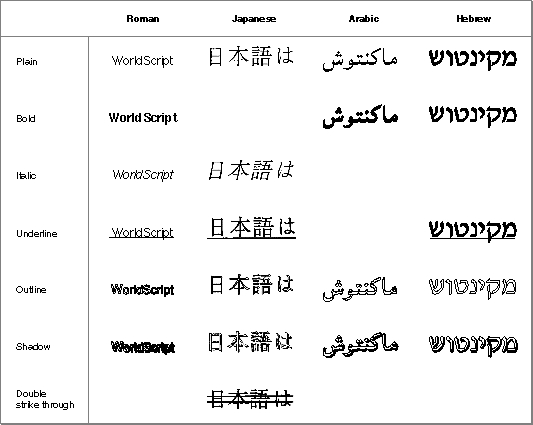
Numbers, Currencies, and Dates
Each language--or in many cases each regional variation of a language--includes a set of conventions for presentation of numbers. For example, in many European countries the decimal character is a comma (,), and the thousands separator is a period (.). In some other areas, western numbers (1...9, 0) are not even used.Each nation has its own currency format, including the symbol used to denote money. The symbol may be one or more characters, and may precede or follow the numeric amount. Negative monetary values are shown differently in different countries.
Date and time formats vary with language and region. The order in which days, months, and years are written, the words and common abbreviations for days and months, and the separators used in writing dates and times can all differ from region to region.
Figure 1-30 shows some common differences in number, currency, and date formats among the United States, European countries, and Japan.
Figure 1-30 Standard international formats
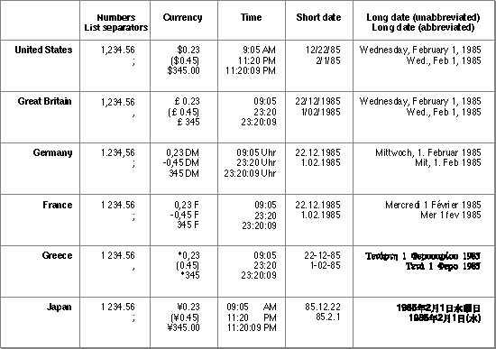
Even the calendar itself is not the same around the world. The standard Gregorian calendar used in Europe and the Americas is not universally accepted:
- In Japan, the Emperor's year is sometimes used instead of the standard Gregorian calendar. The rest of the Japanese calendar system is similar to the Gregorian calendar.
- The Arabic calendar is used extensively throughout the Middle East. It is lunar rather than solar. The months are alternately 29 and 30 days long, so the Arabic calendar year is about 11 days shorter than the Gregorian year. The months have no fixed relation to the sun, so they slowly rotate through all of the seasons of the year (that is, every three years the months shift forward by one Gregorian calendar month).
There are actually two Arabic calendars in common use: the astronomical lunar calendar, based on the moon's phases as actually observed at each location around the world; and the civil lunar calendar, a statutory version of the astronomical calendar. To compute a date correctly for the astronomical lunar calendar requires calculating not only the orbits of the sun and moon, but also knowing the exact latitude, longitude, and time difference from Greenwich mean time.
- Other calendars in common use include the Coptic, Jewish, and Persian calendars.
Character Order and Text Sorting
In most writing systems a need exists for ordering lists of characters, words, or lines of text--such as for writing an alphabet or arranging a dictionary, encyclopedia, or telephone book. Each writing system has its own rules and conventions for sorting text into a meaningful order.In Roman writing systems, sorting is usually based on alphabetic order, which is fairly simple. However, complications arise when sorting text that includes mixed uppercase and lowercase letters, letters with diacritical marks, ligatures, abbreviations, characters that should be grouped, and characters that should be ignored for sorting purposes.
One important concept for Roman systems is the distinction between primary sorting order and secondary sorting order. Text items that are equivalent in terms of primary sorting characteristics are first grouped, and then differentiated according to secondary sorting characteristics. This allows all variations of a character (uppercase and lowercase, with or without diacritical marks, and so on) to be grouped together in sorted lists.
Nonalphabetic writing systems, such as Chinese or Japanese, can have more complex and less standardized sorting conventions than Roman. Some sorting algorithms for ideographic characters are based on the number of strokes per character. Others are based on radicals, standard character subcomponents with a defined sorting order. Others consider the phonetic spelling of the character with Roman or other types of characters (such as Kana), and sort according to Roman alphabetic order or standard Kana order.
Macintosh support for sorting of text is fully described in the chapter "Text Utilities" and the appendixes "International Resources" and "Built-in Script Support" in this book. Tables of specific sorting orders for individual script systems are given in Guide to Macintosh Software Localization.
Variations Among Languages and Regions
A writing system by itself may not be enough to define how a language is written. For example, the Roman writing system is used for both the English and French languages. A written language refers to the whole body of written words and of methods of combining words, including their meanings, used by a particular group of people. A single writing system may be used by multiple languages. Languages within a writing system can modify the sorting order and word boundaries defined by the writing system, and can define minor modifications to its character set.Conversely, some languages are written in more than one writing system. The official language of Malaysia, for example, may be written in either the Roman or the Arabic writing system, but the spoken language is called Malay in either case. Romanian and Moldovan are essentially the same spoken language; however, in Romania this language is written in the Roman writing system, whereas in the adjacent republic of Moldova, it is written in the Cyrillic writing system.
A language in itself may not be enough to define all the conventions for written communication in a particular region. A region is a linguistic or cultural entity, not necessarily a nation or geographic area, whose written language or other text features are unique enough to be treated separately from other regions. A single language, such as French, may have several regional versions. For example, the French language is used in France, in parts of Belgium, Switzerland, and Canada, and in other countries such as Luxembourg, Haiti, Mali, Zaïre, Tahiti, and Vanuatu. Such different areas that use the same language may have different conventions for time, date, and number formats, as well as rules for case conversion or placement of diacritical marks. Some differences may also occur in the behavior of the written language. For example, in France, accents on most characters are generally omitted if the character is written in uppercase; in Québec, the accents are usually preserved.
The Macintosh script management system can account for multiple languages and regional variations within script systems. See "Script Codes, Language Codes, and Region Codes" beginning on page 1-48.